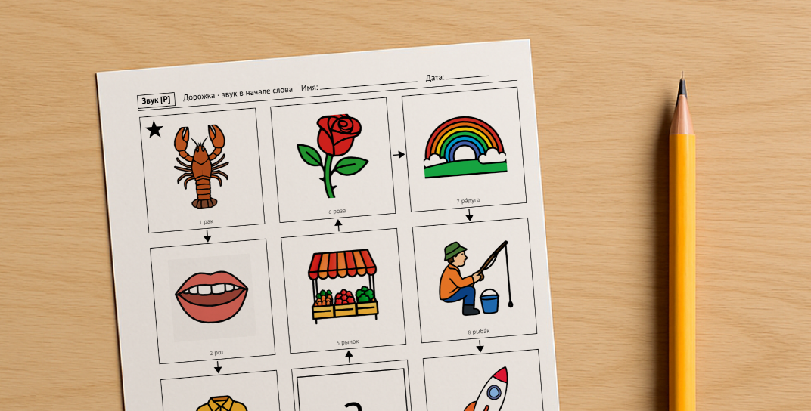
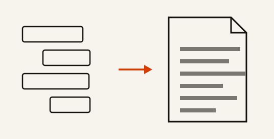

Fanarlabs — небольшая студия программ и игр.
Расширение Chrome для учителя английского. Выделяешь текст на любой странице или фотографируешь страницу учебника и получаешь лист с пропусками и ключом.

Материал для логопеда, собранный под одного ребёнка: каждое слово проверено по звукам, которые этому ребёнку ещё не даются.

Расширение для Chrome, превращающее переписку с ChatGPT в чистый PDF. В магазине, 522 пользователя, рендер на своём сервере.